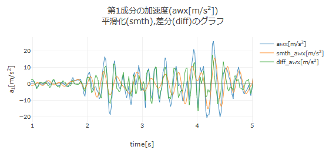
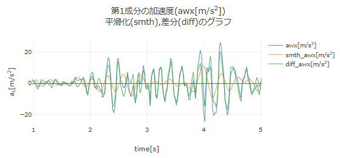
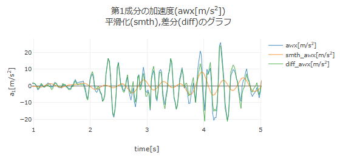
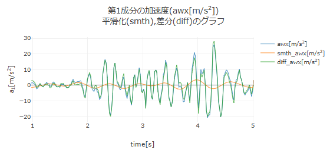

【操作方法】
■ フーリエ変換によるデータの平滑化
本アプリでは，データの平滑化（ノイズ除去）の方法として，フーリエ変換による方法と最小二乗近似による方法を用意している．
ここでは，例として，下図のような加速度データが得られたとして，フーリエ変換を用いて平滑化する方法を説明する．

加速度データを読み込み，「分析に使用する時間領域の設定」を行うと，加速度データのグラフが表示され，その下に「加速度データの平滑化」のエリアが現れる．「▶ フーリエ変換による平滑化」の行をクリックすると，フーリエ変換の設定欄が現れる．データの時間刻み幅が一定でない場合はチェックを入れたままにして，必要に応じて離散フーリエ変換で指定する時間分割数をスライダーで設定する．「フーリエ変換」ボタンを押すと，加速度データをフーリエ変換して，下図のように振幅スペクトルがプロットされる．
振幅スペクトルは，加速度にどのような周波数の振動成分が含まれているかを示しており，上図では周波数が4.46Hz近傍の信号が多く含まれていることを表している．
振幅スペクトルでデータに含まれる振動成分の周波数を確認し，その下に表示されている「カットオフ周波数」を設定して「逆フーリエ変換による平滑化」ボタンを押すと，カットオフ周波数以上の周波数の信号を取り除いて逆フーリエ変換を行う．つまり，データからカットオフ周波数以上の高周波成分を取り除く．逆フーリエ変換により平滑化された加速度のグラフは，元の加速度のグラフに重ねて，下図のように表示される（カットオフ周波数を4.95Hzに設定）．

ここで，オレンジ線(smth_awx)が平滑化されたデータであり，緑線(diff_awx)は差分データ（元のデータから平滑化されたデータを引いたもの）を示す．平滑化されたデータのグラフ（オレンジ線）を見ると，4.95Hz以上の高周波数の細かい振動成分（ノイズ）が元のデータから除去されていることが分かる．
カットオフ周波数を3.96Hz，2.97Hz，1.98Hzと下げていったときの，平滑化されたデータを順に以下に示す．平滑化されたデータの振動成分の周波数が徐々に低くなっていく様子が分かる．

カットオフ周波数2.97Hzの場合の平滑化

カットオフ周波数1.98Hzの場合の平滑化


加速度データの平滑化を行うと，「数値積分する加速度データの選択」の欄が現れ，速度を求めるために数値積分する加速度として，「元のデータ」「平滑化データ」「差分データ」のいずれかを選択できるようになる．また，「平滑化のクリア」ボタンを押すと平滑化データと差分データのグラフを消去する．
速度や位置のデータについても，フーリエ変換による平滑化を同様に行うことができる．